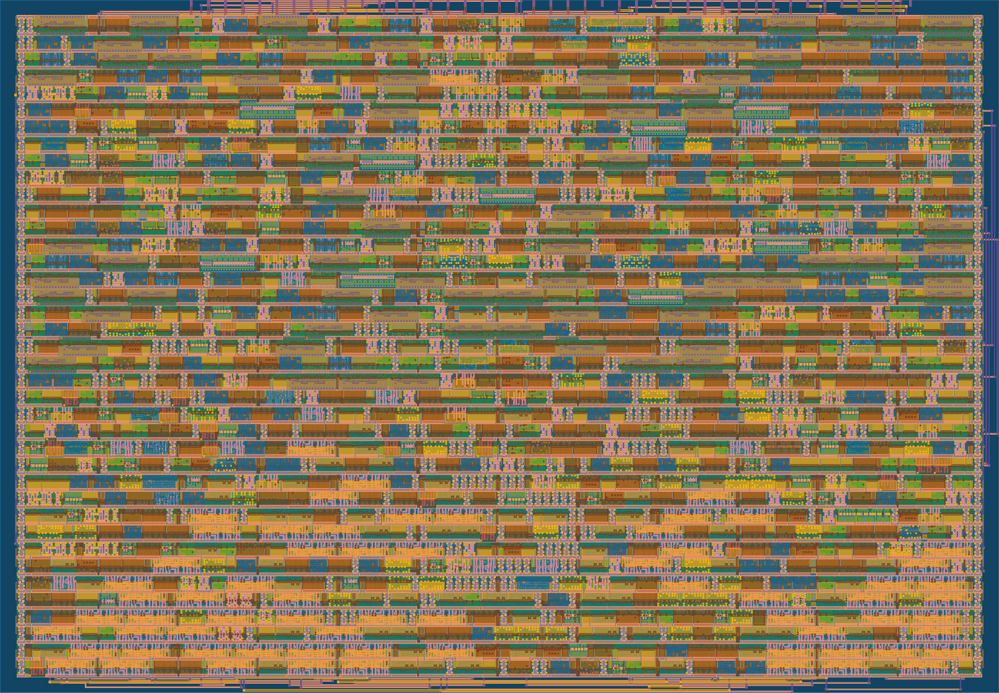

The same RV32I ALU from Project 05, wrapped for a real multi-project shuttle — 101 signals squeezed onto 24 pins, hardened with a clock tree, and signed off with positive slack on every path.
Tiny Tapeout gives every project the same pinout: eight dedicated inputs, eight dedicated outputs, eight bidirectionals. The ALU needs 68 input bits and produces 33. The interface is the design problem.
Two operands at 32 bits each plus a 4-bit opcode is 68 bits in; a 32-bit result plus a zero flag is 33 bits out. Against ui_in[7:0], uo_out[7:0] and uio[7:0], that is a factor of four oversubscribed on input alone. Nothing about the ALU changes — the RTL is byte-for-byte the module that was formally verified in Project 03 and hardened in Project 05. What changes is everything around it.
The obvious answer is a serialisation FSM: shift operands in a bit or a nibble at a time behind a handshake. I rejected it. An FSM carries sequencing state, and sequencing state can desynchronise — if the host and the chip disagree about which byte is next, there is no way to tell from the outside, and recovery means a full reset. On a chip you cannot debug with a probe, that is a bad trade.
The operands are exposed as nine byte-addressed registers. The host writes them in any order, rewrites any single byte, and reads the result back one byte at a time. There is no protocol state to lose.
uio_in[3:0] carries a write address, uio_in[4] is write enable, and ui_in[7:0] is the data byte — captured on the rising clock edge. Addresses 0–3 are the four bytes of a, 4–7 the four bytes of b, 8 the opcode. Reads are pure combinational: uio_in[6:5] selects which result byte appears on uo_out, and the zero flag sits permanently on uio_out[7] with uio_oe = 8'b1000_0000.
The cost is 68 flip-flops. The benefit is that every state is directly addressable and independently rewritable — changing one operand byte and re-evaluating costs one clock, not a nine-byte reload. It also means the chip has no illegal states: any sequence of writes leaves it in a valid configuration, because there is no sequence being tracked.
| Address | Function | Address | Function |
|---|---|---|---|
| 0–3 | a[31:0], LSB first | 8 | alu_op[3:0] |
| 4–7 | b[31:0], LSB first | 9 | accumulate — a <= result |
Address 9 is not a register. Writing to it feeds the ALU result back into a — turning a stateless calculator into an accumulator, and introducing the design's only register-to-register path.
Load a and the opcode once, then stream new b values and pulse address 9 after each. A running total costs one clock per operation instead of reloading all nine bytes. In RTL it is a single case arm — 4'd9: a_reg <= alu_result; — which synthesises to a 32-bit multiplexer on the register's D input and one decode term.
Physically it is more interesting than that. Before accumulate, every path in the design ran from a register to an output pad. Adding it created a → ALU → a: a genuine reg-to-reg arc through the entire 32-bit datapath, which static timing analysis now has to close inside one clock period. That arc closes with +10.49 ns of slack — comfortably the least critical path in the design.
The shuttle's CI reports success on DRC, LVS and antenna. It does not fail on timing. The first hardened build passed every check and carried a −2.19 ns setup violation that nothing in the interface surfaced.
I found it by pulling metrics.csv out of the build artifact rather than trusting the summary page. The failing path was not the new accumulate arc — that had positive slack throughout — but the older register-to-output path, a_reg → ALU → result mux → pad, against the template's default 20 ns constraint. The real critical path measured 22.2 ns.
The fix was one line: relax CLOCK_PERIOD from 20 ns to 25 ns. For a host-paced register interface the operating frequency is irrelevant — nothing streams — so the only thing lost is a number on a datasheet, and the thing gained is a design that does not ship with a known violation. Utilisation dropped from 85.2% to 80.4% in the process, because the relaxed constraint let synthesis choose smaller cells.
| Metric | Value | Metric | Value |
|---|---|---|---|
| Setup worst slack | +0.425 ns | Standard cells | 1,602 |
| Reg-to-reg setup slack | +10.49 ns | Core utilization | 85.5% |
| Hold worst slack | +0.117 ns | Routed wirelength | 55.4 mm |
| Clock skew | 0.255 ns | Flip-flops | 68 |
| DRC / LVS / antenna | 0 / 0 / 0 | Clock buffers | 117 |

The cocotb suite — 14 directed vectors, 120 constrained-random vectors across all ten opcodes, partial-write isolation, write-enable gating, accumulate sequences and reset behaviour — passes at RTL and again against the hardened gate-level netlist. Ten of ten, both times.
Project 05 was purely combinational. This one has registers. Two metrics prove that structurally, straight out of OpenROAD — no interpretation required.
| Project 05 — combinational | Project 07 — sequential | |
|---|---|---|
| Clock period | 33 ns | 25 ns |
| Reg-to-reg setup slack | Infinity | +10.49 ns |
| Clock skew | 0 | 0.255 ns |
| Standard cells | 1,293 | 1,602 |
| Core utilization | 64.6% | 85.5% |
| Routed wirelength | 38.2 mm | 55.4 mm |
| Timing repair buffers | 208 | 183 |
| Die area | 21,303 µm² (free) | 17,955 µm² (fixed tile) |
A reg-to-reg slack of Infinity is not a good result — it means the metric is undefined, because no register-to-register paths exist. Likewise a clock skew of exactly zero means there is no clock tree to have skew. Project 05 hardened a block of pure combinational logic: no sequential elements, no CTS stage doing real work, no hold analysis with anything to hold. Both numbers becoming finite is the whole difference between the two runs, stated in the tool's own output.
The rest of the deltas are honest but mixed. 309 extra cells is the 68 flip-flops plus the register-file decode and result multiplexers — synthesis reports sequential elements at 12.3% of cell area. But utilization jumped because the Tiny Tapeout die is a fixed 1×1 tile, not a floorplan sized to the design, and the clock periods differ. Some of the movement is the design; some is the constraint. Re-running Project 05 at 25 ns on a fixed die would isolate it properly. That experiment is worth doing and I have not done it yet.
The whole flow runs in GitHub Actions on the shuttle's own template — no local toolchain required to rebuild the GDS.
The repository is built from TinyTapeout/ttsky-verilog-template. Pushing to main triggers three workflows: test runs the cocotb suite under Icarus, gds hardens with LibreLane 3.x and re-runs the same tests against the gate-level netlist, and docs publishes the datasheet page. Every number above comes from tt_submission/stats/metrics.csv in the build artifact.
To run the simulation locally you need Icarus Verilog and cocotb — nothing else. make inside test/ gives the full ten-test result in under a second of wall time. To rebuild the physical design locally instead of in CI, LibreLane via Nix with the sky130 PDK reproduces the same flow the Action runs.